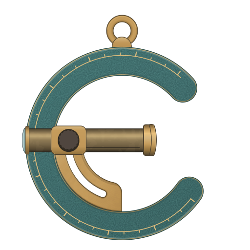

The Embedding
Space Explorer
Open-source desktop software for researching cultural collections through embedding space exploration.
Import or compute vector embeddings and explore them through interactive projections linked to collection metadata. Investigate patterns using filters, color mappings, and image previews, and create figures or animations.

Download EIDORA
macOS · Windows · LinuxA closer look
The entire workflow in one interface

Five connected workspaces
Start where your research is.
Begin with as little as a folder of media files, or bring existing embeddings or projection coordinates. Import multidimensional vectors representing any kind of data, or compute embeddings with models for images, video, text, audio, and multimodal combinations. Use the workspaces you need as your research develops.
Bring your collection together
Add media sources, connect collection items with metadata, and prepare thumbnails for visual exploration. Start with a folder of files and build a project around your research material.
Add context to your analysis
Import, search, and edit the information that describes your collection. Organize items into groups and use their metadata to guide filtering, visual comparisons, and interpretation.
Work with different representations
Import vectors from your own analyses or compute embeddings locally with compatible models from the Model Zoo. Compare embedding datasets, cluster items, and carry those groups into visual exploration.
Investigate patterns interactively
Compute or import two-dimensional projections and explore them through points and media previews. Filter and color items by metadata, annotate observations, and save snapshots to revisit or compare views. Use the Slicer to explore numerical ranges, such as time periods, while keeping projection coordinates fixed.
Turn explorations into research outputs
Arrange saved views into single- or multi-panel figures, with captions, legends, and annotations. Export figures and animations, and save compositions to refine them as your analysis develops.
An open research tool
Documentation and project resources.
Find installation guidance, follow development, and contribute to the project.
01 / Project 03 / Research
Source code
Explore the code, report an issue, or contribute on GitHub.
Open repository 02 / DevelopmentRelease notes
Find published releases and the changes that accompany them.
View release historyCiting EIDORA
Citation details for acknowledging EIDORA in your research.
Citation forthcomingGood to know.
Do I need to write code?
No. EIDORA provides a graphical interface for preparing collections, computing embeddings, exploring projections, and creating figures. You can also import embeddings or projection coordinates produced with your own scripts or other tools.
Does my collection data leave my computer?
Analysis runs locally, so your collection data do not need to be uploaded to a server. Model discovery and downloads require internet access; installed models run on your computer.
How should I interpret an embedding map?
Nearby items may share features captured by the embedding model, but proximity alone does not establish a historical, cultural, or semantic relationship. Two-dimensional projections can also distort distances. Use the map to develop questions, then examine the source material, metadata, model, and projection settings.
Can different models produce different results?
Yes. Different models capture different features, so the same collection can produce different relationships and groupings. Projection methods and settings also affect the map. Comparing these choices can help you assess which patterns are useful for your research.
How can I document my methods?
Methods reports assemble recorded model and algorithm details, parameter settings, and bibliographic references. Use them to support your methods descriptions and figure captions, alongside your own account of research decisions and interpretation.
Is EIDORA free and open source?
Yes. EIDORA is free and its source code is available under the MIT license. Embedding models may have separate licenses; check the terms of the models you use.
Development and acknowledgements
EIDORA was developed by Tillmann Ohm with funding from the Professorship of Digital Humanities: Images and Objects at FAU Erlangen-Nürnberg and builds on previous work at CUDAN (Horizon 2020 Grant No. 810961).